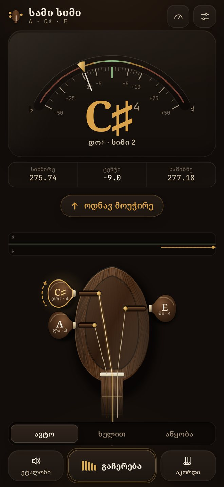
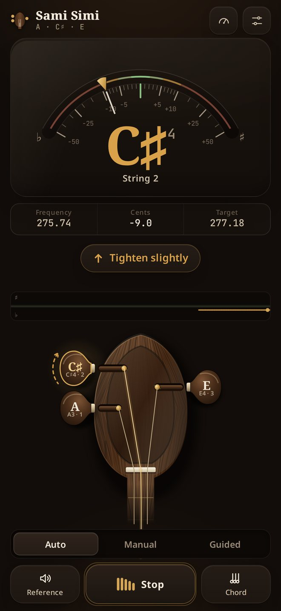
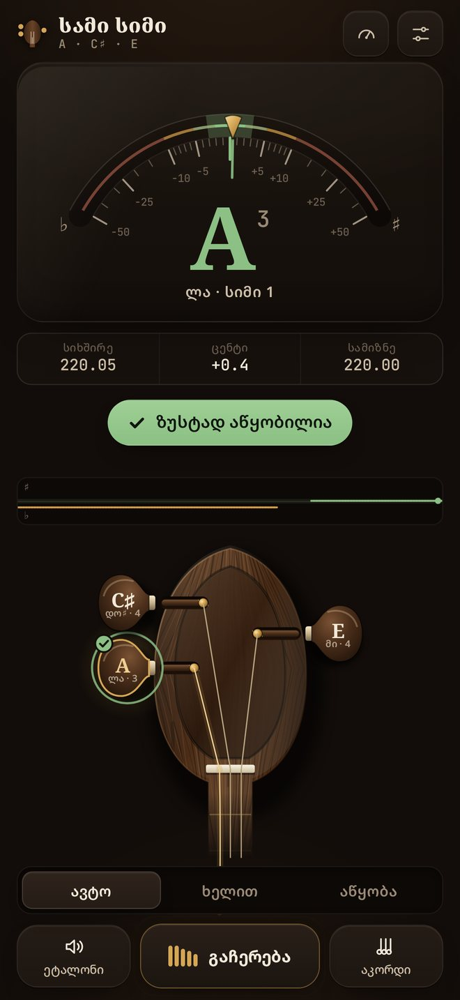
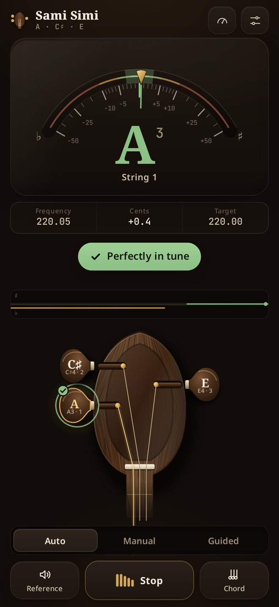
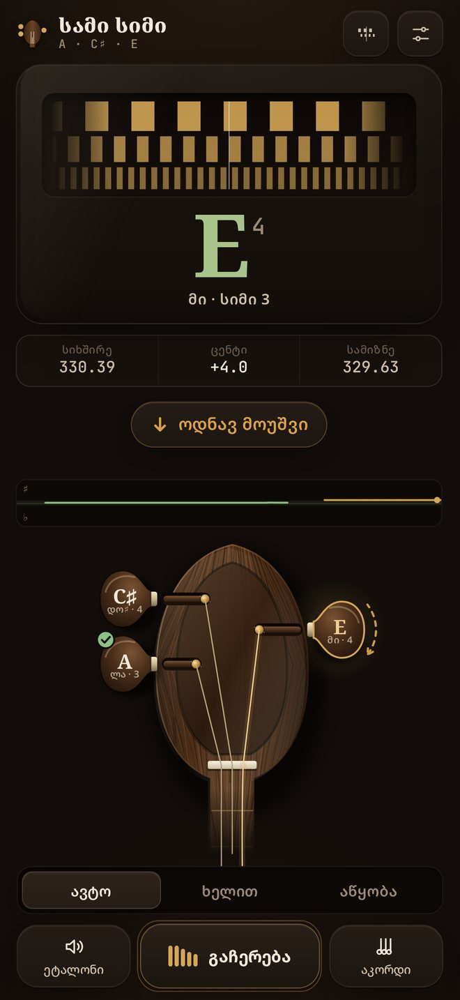
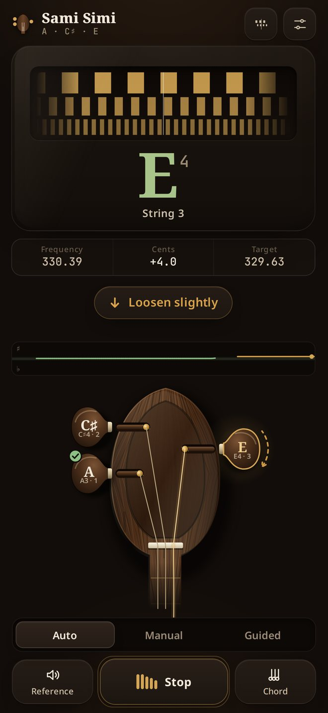
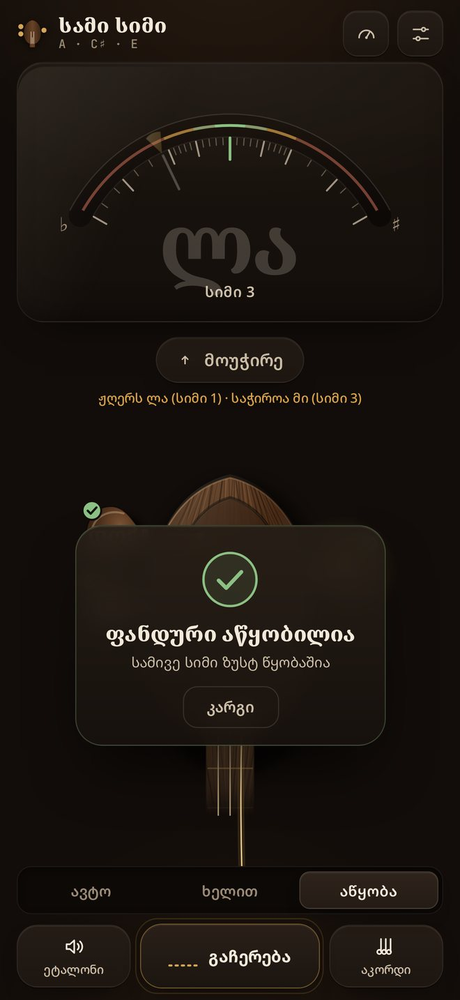
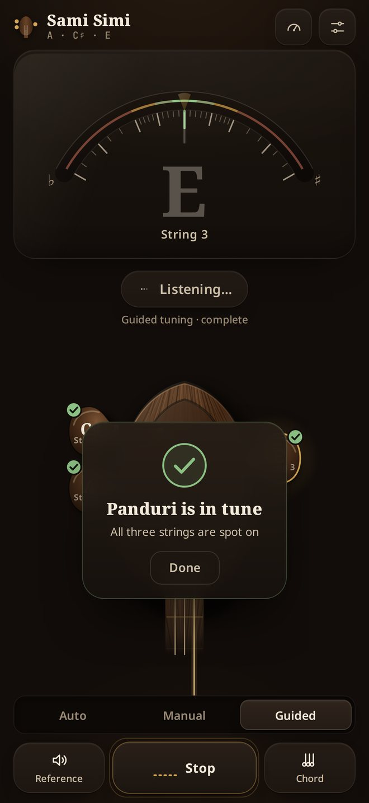

სამი სიმიSami Simi
ზუსტი ტიუნერი ქართული ფანდურისთვისA precise tuner made for the Georgian panduri
ჩამოკარი სიმი და ტიუნერი გეტყვის, რომელი სიმია, რამდენი ცენტით გადაცდა და საით დაატრიალო მომჭერი. ტრადიციული წყობა ლა · დო♯ · მი უკვე აწყობილია — არაფრის მორგება არ გჭირდება.
Pluck a string and Sami Simi tells you which string it is, how many cents it is off and which way to turn the peg. The traditional A · C♯ · E tuning is built in — nothing to set up.


შექმნილია ფანდურისთვისBuilt for the panduri
არა გიტარის ტიუნერი სამ სიმზე, არამედ ინსტრუმენტი, რომელიც ფანდურის ხმას იცნობს.Not a guitar tuner squeezed onto three strings — a tool that knows how a panduri sounds.
ცენტის სიზუსტითAccurate to the cent
ძრავა ფილტრავს ჩამოკვრის ხმაურს, ობერტონებს და ოქტავის შეცდომებს. ისარი ნულთან უფრო წვრილად აჩვენებს.
The engine filters pluck noise, overtones and octave errors. The scale gets finer near zero, where it matters.
სტრობ-რეჟიმიStrobe mode
ზოლები მოძრაობს ნამდვილი სიხშირული სხვაობით და ჩერდება, როცა სიმი ზუსტადაა აწყობილი.
Bands drift with the real frequency difference and stop when the string is exactly in tune.
ნაბიჯ-ნაბიჯ აწყობაGuided tuning
დამწყებთათვის: ჯერ ლა, მერე დო♯, ბოლოს მი. ტიუნერი თავად გადადის შემდეგ სიმზე.
For beginners: A, then C♯, then E. The tuner moves to the next string by itself.
ყურით აწყობაTune by ear
ეტალონური ბგერა ჟღერს როგორც ჩამოკრული ფანდურის სიმი; აკორდით სამივე სიმს ერთად მოისმენ.
Reference tones sound like a plucked panduri string; the chord button plays all three together.
ხმა არსად მიდისYour sound stays with you
ანალიზი ხდება მხოლოდ ტელეფონში. არც ჩანაწერი, არც ანგარიში, არც რეკლამა.
Analysis happens on your phone only. No recordings, no account, no ads.
ინტერნეტის გარეშეWorks offline
ერთხელ გახსნის შემდეგ ტიუნერი ინტერნეტის გარეშეც მუშაობს — რეპეტიციაზე, სოფელში, სცენაზე.
After the first visit it works without internet — at rehearsal, in the village, on stage.
როგორ გამოიყურებაSee it in action






დააყენე ტელეფონზეPut it on your phone
iPhone
- გახსენი ეს გვერდი Safari-ში და დააჭირე „გახსნა“.
- Share ღილაკი → „Add to Home Screen“.
- ჩართე მიკროფონი, როცა გკითხავს.
- Open this page in Safari and tap “Open”.
- Share → “Add to Home Screen”.
- Allow the microphone when asked.
Android
- ჩამოტვირთე სატესტო APK ზემოთ.
- გახსენი ფაილი და დაუშვი ინსტალაცია ამ წყაროდან.
- ან გახსენი Chrome-ში → მენიუ → „Install app“.
- Download the test APK above.
- Open it and allow installs from this source.
- Or open in Chrome → menu → “Install app”.